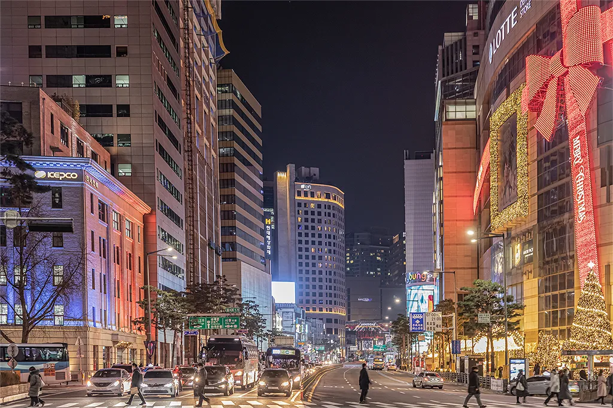

명동
서울특별시 중구에 위치한 명동은 매일 수십만 명이 방문하는 대한민국 최대의 쇼핑·관광 중심지이자 대표적인 관광특구입니다.
K-뷰티와 K-패션을 체험하려는 내외국인 관광객들에게 서울 여행의 필수 코스로 손꼽히며, 대형 백화점과 로드숍, 다양한 길거리 음식이 밀집해 있습니다.

서울특별시 중구에 위치한 명동은 매일 수십만 명이 방문하는 대한민국 최대의 쇼핑·관광 중심지이자 대표적인 관광특구입니다.
K-뷰티와 K-패션을 체험하려는 내외국인 관광객들에게 서울 여행의 필수 코스로 손꼽히며, 대형 백화점과 로드숍, 다양한 길거리 음식이 밀집해 있습니다.